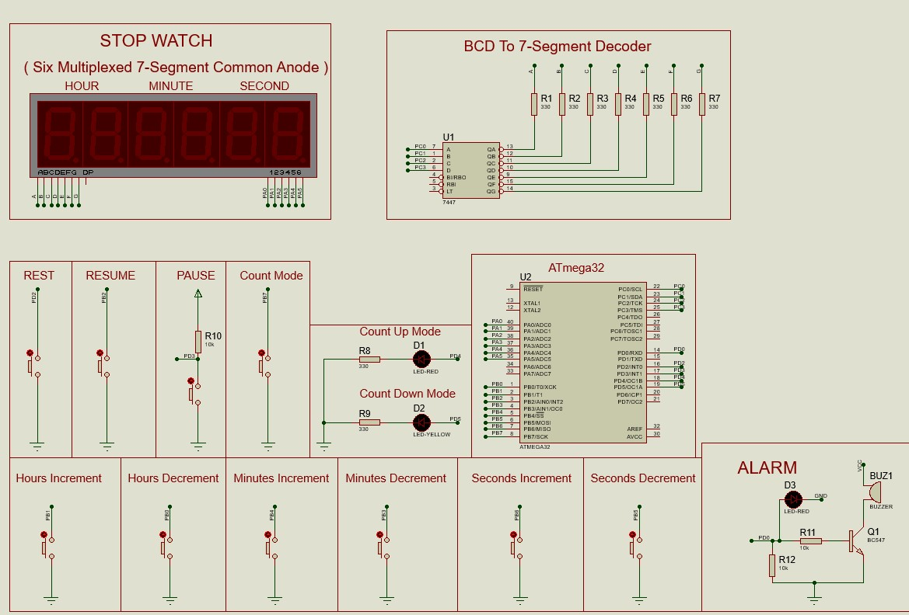

⏱️ Dual Mode Stopwatch
Gallery

Dual Mode Stopwatch Proteus Design
Overview
The Dual Mode Stopwatch is an embedded system designed using the ATmega32 microcontroller and multiplexed seven-segment displays. The system supports two operating modes: Increment Mode for counting upward and Countdown Mode for counting downward from a user-defined time value. Multiple external interrupts and push buttons provide intuitive control over the stopwatch, including reset, pause, resume, and mode switching functionalities.
Objectives
- Implement a digital stopwatch using ATmega32.
- Support increment and countdown modes.
- Display time using multiplexed seven-segment displays.
- Use external interrupts for user control.
- Provide accurate timing using Timer1.
- Implement visual and audible alerts.
Key Features
- Increment Stopwatch Mode.
- Countdown Timer Mode.
- Reset Functionality.
- Pause & Resume Control.
- Time Adjustment Buttons.
- Mode Toggle Function.
- Buzzer Alarm at Countdown Completion.
- LED Mode Indicators.
- Multiplexed Seven-Segment Display.
- Interrupt-Based User Interaction.
Hardware Components
- ATmega32 Microcontroller.
- Six Seven-Segment Displays.
- 7447 BCD to Seven-Segment Decoder.
- 10 Push Buttons.
- Buzzer Alarm.
- Red & Yellow LEDs.
- NPN Transistors.
- 16 MHz Crystal Oscillator.
Operation Modes
- Increment Mode: Counts upward from zero and displays hours, minutes, and seconds.
- Countdown Mode: Counts downward from a user-defined starting value until reaching zero.
- Alarm Function: Activates a buzzer when the countdown timer reaches zero.
Technologies Used
- ATmega32
- Embedded C
- Timer1 (CTC Mode)
- External Interrupts
- Multiplexing Technique
- 7447 Decoder
- Seven-Segment Displays
- Proteus Simulation
Challenges & Solutions
-
Challenge:
Driving six seven-segment displays
simultaneously.
Solution: Implemented multiplexing using transistor switching and a single decoder. -
Challenge:
Accurate time counting.
Solution: Configured Timer1 in CTC mode for precise timing intervals. -
Challenge:
Responsive user interaction.
Solution: Utilized external interrupts for reset, pause, and resume operations.
Results
- Accurate stopwatch timing.
- Reliable countdown operation.
- Smooth multiplexed display performance.
- Stable interrupt-driven control.
- Successful alarm activation.
- Fully functional Proteus implementation.
Future Improvements
- LCD-Based User Interface.
- EEPROM Time Storage.
- Wireless Control Features.
- Multiple Timer Profiles.
- Mobile Application Integration.
- Real Hardware Implementation.